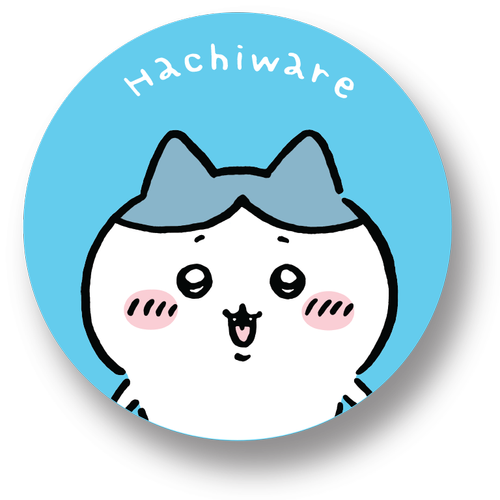
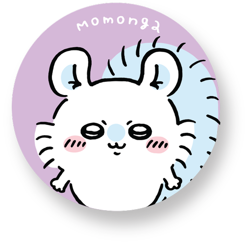
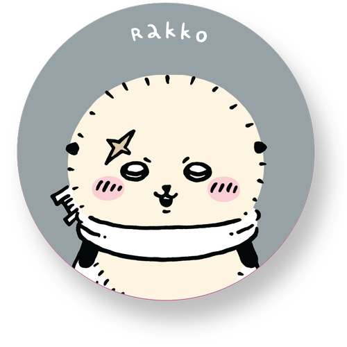
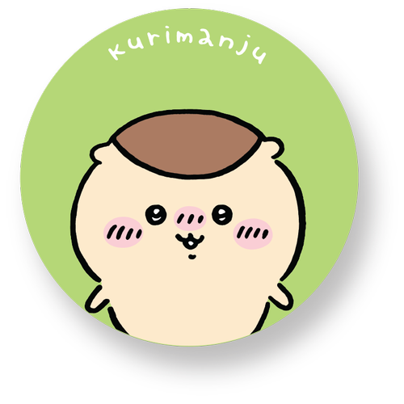

Chiikawa is the main character who is caring and shy. This creature is described with white fur, small, bear-like ears and has a small, ball-shaped tail. It doesn't speak full sentences like its friend Hachiware but it can make sounds to express itself. It becomes easily nervous in social situations. Chiikawa loves to eat dango.

⊹₊˚‧︵‿₊୨ Hachiware ୧₊‿︵‧˚₊⊹
Hachiware is a helpful, bright and positive character. Well-known for their blue ears and tail, Hachiware can communicate well in the story while its friends aren't able to. This cat-like creature is the most extroverted of the trio. It is said by the author that Hachiware is not necessarily a cat.
⊹₊˚‧︵‿₊୨ Usagi ୧₊‿︵‧˚₊⊹
Usagi is an energetic and lively character. Usagi has yellow fur and ressembles a rabbit. Usagi is the homeless one out of its friends. It enjoys teasing Chiikawa. It is the most courageous character amongst Chiikawa and Hachiware. This little bunny is mostly seen eating so the fans like to say that Usagi has quite the hunger. Usagi's famous dance move is shown in the video above!

⊹₊˚‧︵‿₊୨ Momonga ୧₊‿︵‧˚₊⊹
Momonga is a mischievous and selfish character in the show. Momonga is a flying squirrel with a light blue tail who loves to cause trouble for other characters. It loves to act all cute and begs for all sorts of things. This little creature is very self-centered and refuse to share with others.

⊹₊˚‧︵‿₊୨ Rakko ୧₊‿︵‧˚₊⊹
Rakko is a strong and skilled character. This creature has pale yellow fur with black ears and is depicted as a sea otter. It is always seen wearing a white cloak with a sword behind his back. This sea otter is very good at hunting and often looked up upon by Chiikawa and the rest from his skills.

⊹₊˚‧︵‿₊୨ Kurimanju ୧₊‿︵‧˚₊⊹
Kurimanju is a kind and alcoholic character. This honey badger loves to drink beverages that are "strong ones". Kurimanju has brown fur on the top of his head and beige fur below the top of his head. It is known for making a loud sigh after finishing his drink.